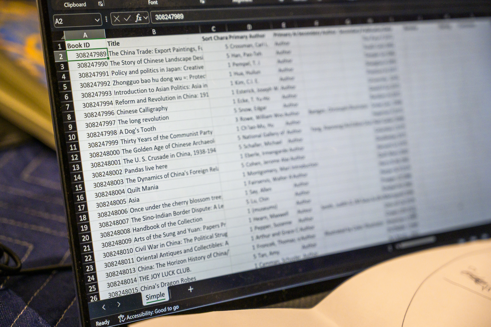
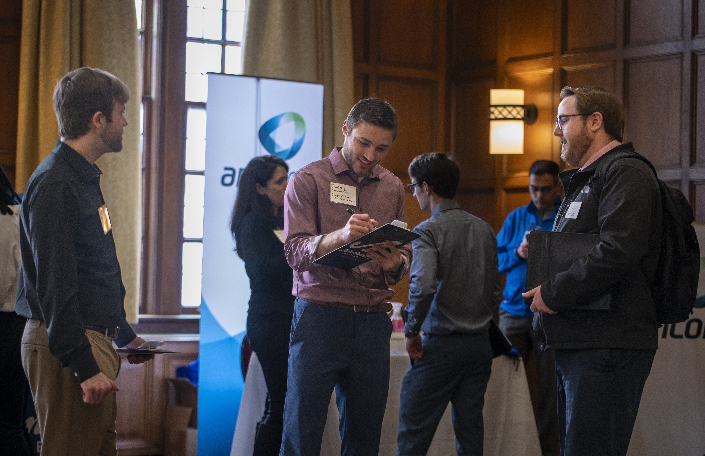

Phase 4: Completing, Reflecting, and Translating your Impact
The Power of Closing Well and Reflecting Deeply
Close your project responsibly, evaluate your outcomes, and articulate your real-world experience for you future career
A project is not complete simply because the final deliverable has been handed over. The final stages—closing, reflecting, and translating—are what transform a transient project into lasting organizational value and personal career momentum.
Responsible handoffs ensure that partners are not left with abandoned tools or undocumented systems they cannot maintain. Delivering high-quality technical assets is only half the job—ensuring the community partner or client can independently maintain, update, and benefit from your work long after the semester ends is what defines a successful project. Simultaneously, structured reflection forces you to pause and ask: What did I learn about my technical skills, my teamwork style, and the ethical impact of my work? Without reflection, experience is just something that happened to you; with reflection, experience becomes expertise. Learning to translate complex, messy project narratives into clear resume bullets and portfolio case studies is what turns your UMSI education into your greatest professional asset.

Completing and Transitioning Work
Package code, design files, reports, and technical assets into accessible, usable formats for your partners.
Formally conclude the project with gratitude, clarity, and clear future boundaries.
Featured resource: Exiting a Community-Engaged Project Worksheet: Guided template for responsible project transition, asset delivery, and offboarding.
Evaluating Impact
Measure project outcomes against initial scoping goals and gather client feedback.
Project Scoping Handout & Terms: Re-evaluate final deliverables against original project commitments.
Phase 5: Translating Your Experience into Career Momentum
Employers do not just hire technical skills—they hire people who can solve unscripted problems, collaborate in diverse teams, and deliver results under realistic constraints. This track guides you in bridging the gap between your academic work and your professional brand, helping you articulate the full narrative of your growth.

Articulating Skills
Translate your complex, unscripted project experience into compelling resume bullets and interview responses.
Real-world applications of work provide the opportunity for you to stand out to employers. UMSI graduates report these applications as one of the most valuable parts of their time with UMSI.
How to Include Project Experience on Student Resumes: Step-by-step guide to translating client/course projects into high-impact resume experience.
Portfolio Integration
Document your process, artifacts, key decisions, and measurable outcomes.
Use the STAR method to structure and highlight your impact
- Situation: What was the context of the project?
- Task: What was the task you needed to accomplish?
- Action: What did you do to address the challenge?
- Result: What was the result of your work?
More Interviewing and Portfolio Resources
Maintaining Networks
Keep professional touchpoints open with mentors, community partners, and teammates. LinkedIn is a great place to start.
How to Engage with UMSI on Social Media: Best practices for sharing project milestones, tagging partners, and showcasing work publicly on LinkedIn.

 Skip to Main Content
Skip to Main Content